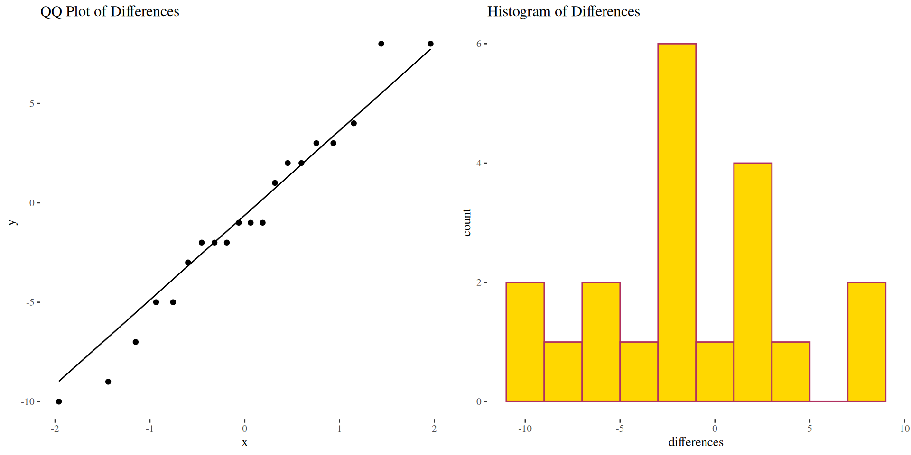
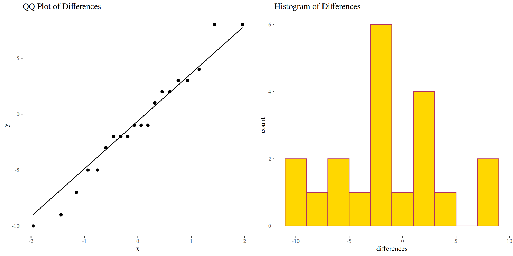

Math 216: Statistical Thinking
| Pair | Method A | Method B |
|---|---|---|
| 1 | 85 | 83 |
| 2 | 88 | 89 |
| 3 | 90 | 87 |
| 4 | 92 | 84 |
| 5 | 91 | 92 |
| 6 | 89 | 90 |
| 7 | 93 | 85 |
| 8 | 95 | 91 |
| 9 | 96 | 98 |
| 10 | 97 | 94 |
| Pair | Method A | Method B |
|---|---|---|
| 11 | 98 | 100 |
| 12 | 99 | 101 |
| 13 | 100 | 99 |
| 14 | 101 | 111 |
| 15 | 102 | 111 |
| 16 | 103 | 106 |
| 17 | 104 | 109 |
| 18 | 105 | 103 |
| 19 | 106 | 111 |
| 20 | 107 | 114 |
Let \(\mu_d = \mu_A - \mu_B\) denote the population mean difference:
Calculate Differences: \(d_i = A_i - B_i\) for each pair
Compute Summary Statistics:
Check Conditions:
Select Test Statistic:
\[t = \frac{\bar{d} - \mu_{d0}}{s_d/\sqrt{n}} \quad \text{with } df = n-1\]
Where \(\mu_{d0}\) is the hypothesized mean difference (0 under \(H_0\))
Make Decision:
A 95% CI for \(\mu_d\) is constructed as:
\[\bar{d} \pm t^*_{\alpha/2} \frac{s_d}{\sqrt{n}}\]

# Define the scores for Method A and Method B
methodA <- c(85, 88, 90, 92, 91, 89, 93, 95, 96, 97, 98,
99, 100, 101, 102, 103, 104, 105, 106, 107)
methodB <- c(83, 89, 87, 84, 92, 90, 85, 91, 98, 94, 100,
101, 99, 111, 111, 106, 109, 103, 111, 114)
# Calculate differences
differences <- methodA - methodB
# Generate a QQ plot for normality check
qq_norm <- ggplot(data = tibble(differences), aes(sample = differences)) +
stat_qq() + stat_qq_line() +
ggtitle("QQ Plot of Differences")
# Generate a histogram for normality check
histogram <- ggplot(data = as.data.frame(differences), aes(x = differences)) +
geom_histogram(bins = 10, color = "maroon", fill = "gold") +
ggtitle("Histogram of Differences")
Anderson-Darling normality test
data: differences
A = 0.2269, p-value = 0.787[1] 4.92336[1] 2.093024t.test for paired samples
Paired t-test
data: methodA and methodB
t = -0.7721, df = 19, p-value = 0.7752
alternative hypothesis: true mean difference is greater than 0
95 percent confidence interval:
-2.753597 Inf
sample estimates:
mean difference
-0.85
One Sample t-test
data: differences
t = -0.7721, df = 19, p-value = 0.7752
alternative hypothesis: true mean is greater than 0
95 percent confidence interval:
-2.753597 Inf
sample estimates:
mean of x
-0.85
One Sample t-test
data: differences
t = -0.7721, df = 19, p-value = 0.7752
alternative hypothesis: true mean is greater than 0
95 percent confidence interval:
-2.753597 Inf
sample estimates:
mean of x
-0.85